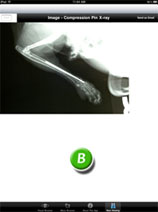

Related Content View

- (A) Adobe PDF document. Scroll by tapping and dragging. Pinch in/out controls zoom level. Click the Backbutton at the top left to exit.
- (B) Image. Standard pinch to zoom controls apply. Click the Back button at the top left to exit.
- (C) Video file. Note that standard iPad video controls are applicable: play/pause, scrubbing by dragging the status indicator, volume, regular size/oversize window, etc.
Things to Keep in Mind
Hint: Remember that the Now Playing button at the bottom of the screen can be used to switch back to your last viewed content item.
Note: documents and images can be sent as attachments to contacts. This feature is covered in the next section.